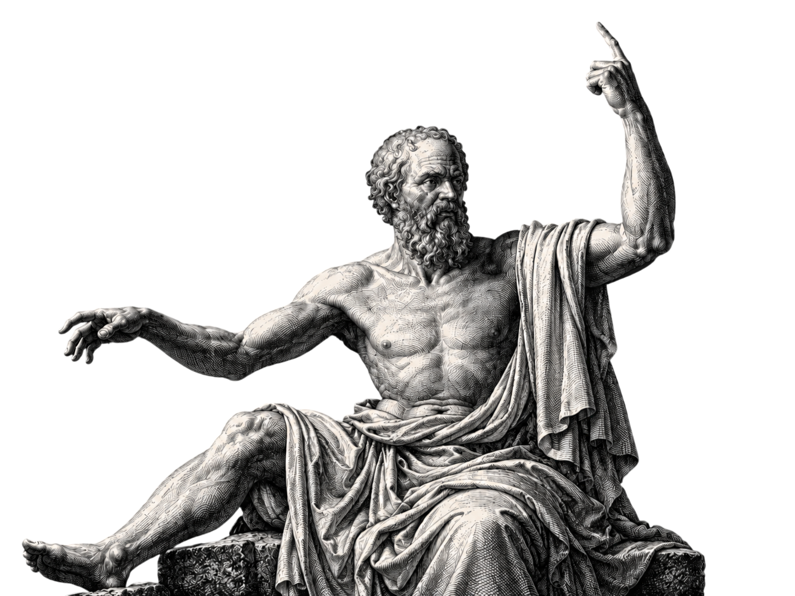

Idealismo
O que torna uma decisão justa?
ANDREY · EDUARDO · ERICK
01 / O PROBLEMA
A pergunta
antes da regra.
Bolsas de estudo.
Os dados estão na mesa.
O que conta como mérito?
Uma família de posições que dá papel central às ideias, à mente ou às formas do pensamento.
NA COMPREENSÃO DO REAL E DO CONHECIMENTOCaso hipotético elaborado pelo grupo.
02 / UM PRECURSOR ANTIGO
Platão

Atenas · século IV a.C.
Formas / Ideias
Justiça em si
A Forma não é uma opinião pessoal.
03 / A ALEGORIA DA CAVERNA
Da aparência
à pergunta.
é justo?
Por que a nota seria
uma medida de justiça?
04 / IDEALISMO TRANSCENDENTAL
Kant
Século XVIII · Iluminismo
Como conhecemos?
Experiênciafornece conteúdo
Espaço + tempoformas da sensibilidade
Entendimentoorganiza o que é dado
05 / CONDIÇÕES E LIMITES
Platão ≠ Kant
Referências
inteligíveis.
Condições humanas
do conhecer.
Categorias
Ex.: causalidade
Fenômeno
Objeto como o conhecemos
na experiência
Coisa em si
Limite do conhecimento
Critérios sociais de uma bolsa não são categorias kantianas.
06 / A REGRA SOCIAL
A mesma bolsa.
Qual regra é justa?
Nota.
Desempenho medido
pela avaliação.
Nota + contexto.
Trajetória e oportunidades
também entram na análise.
Toda escolha de critério precisa de justificativa.
Caso hipotético do grupo. Nenhuma regra vence automaticamente.
07 / A REGRA VIRA TECNOLOGIA
Quem escolhe
o que o sistema mede?
Um sistema de IA ordena inscrições para bolsas.
- Objetivo
- Dados
- Critérios
- Pesos
- Resultado
- Revisão
Quem fica de fora?
O critério mede o que promete?
Como corrigir erros?
Pessoas definem as escolhas. Cálculo correto não garante uma regra justa.
08 / POR QUE O IDEALISMO IMPORTA HOJE?
Ideias orientam critérios.
Dados testam efeitos.
Decisões podem ser revistas.
09 / FONTES E LEITURAS
Referências
Idealism
Stanford Encyclopedia of Philosophy
plato.stanford.edu/entries/idealism/Plato
Stanford Encyclopedia of Philosophy
plato.stanford.edu/entries/plato/República · livro VII, 514a–517a
Perseus Digital Library
www.perseus.tufts.edu/hopper/text?doc=plat.+rep.+7.514aKant’s Transcendental Idealism
Stanford Encyclopedia of Philosophy
plato.stanford.edu/entries/kant-transcendental-idealism/Crítica da razão pura · 1781/1787
Tradução inglesa · Project Gutenberg
www.gutenberg.org/ebooks/4280AI Risk Management Framework · 2023
AI RMF 1.0 · NIST AI 100-1
doi.org/10.6028/NIST.AI.100-1Bolsas e IA: aplicação hipotética elaborada pelo grupo.